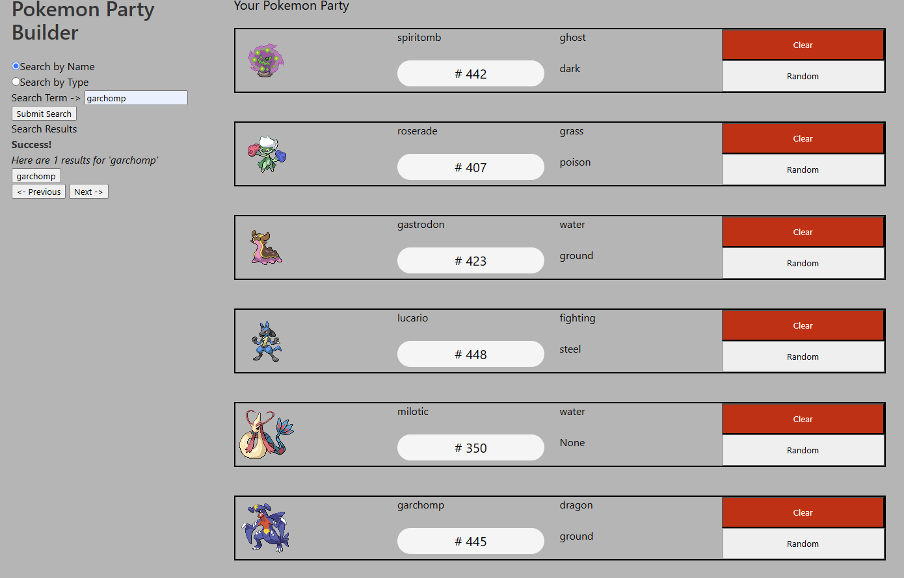
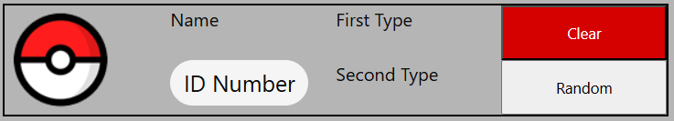
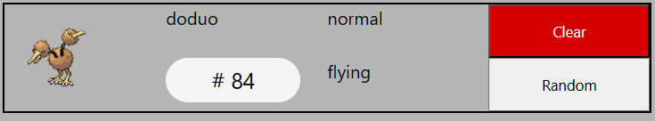
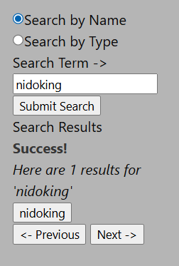
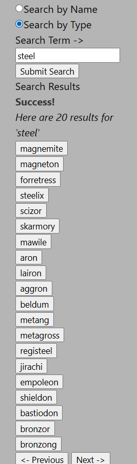
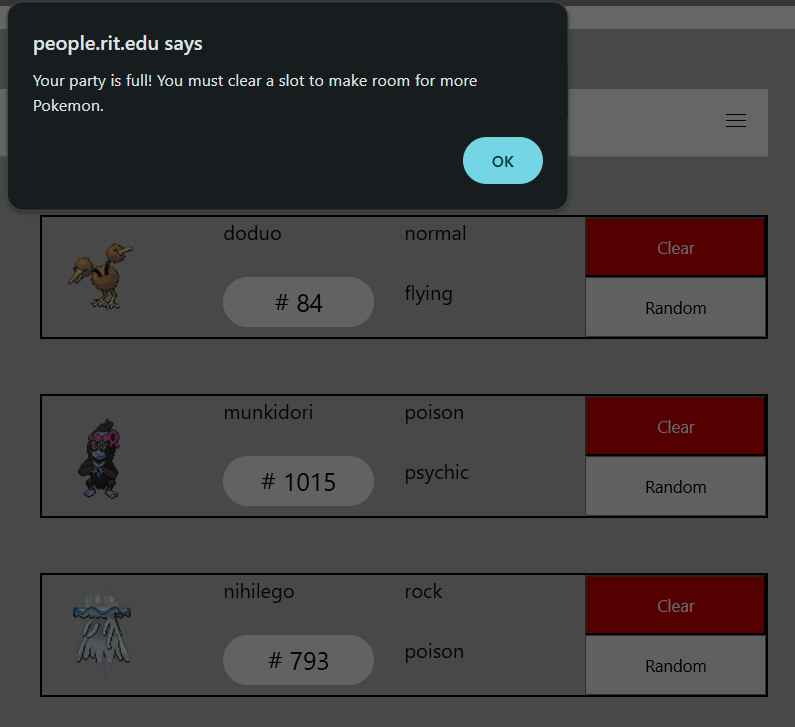

A website that uses a fan-made Pokemon API to allow users to build a Pokemon party.
The project was originally started for my first web development course, and updated as part of my second.
The original page was created with HTML, CSS and JavaScript. The updated version replaced some CSS with Bulma.
Users can use the search functions to search for Pokemon by name or by type.
Clicking on one of the resulting buttons will add that Pokemon to the next available slot.
Like the main games, only 6 Pokemon may be in the party at a time. They can be removed with the "clear" button.
Users can also choose to randomize one of the Pokemon in a slot. They can randomize a full slot if desired.
The improvements in the updated version are primarily to the backend.
I changed the JavaScript to TypeScript and added strong variable typings to almost every variable.
There were a few exceptions, such as a click handler and some API data, that would cause errors if not left as they were.
I created a class to hold the relevant information for each Pokemon to further organize the project.
I also created an enumeration of all 18 Pokemon types to remove the need to check for strings, and sanitize input for invalid types.
On the front end, the styling of the search area has been replaced with Bulma.
There is also a navigation bar at the top of the page that allows the user to move between the app and a description page.
The original had a few bugs, such as searches by type not populating in numerical order.
This specific bug was fixed in the updated version for initial searches.
The next step is to implement a sorting algorithm to ensure the results are sorted correctly.

An empty party slot.

A filled party slot.

Search result by name.

Search result by type.

The warning message when trying to add to a full party.